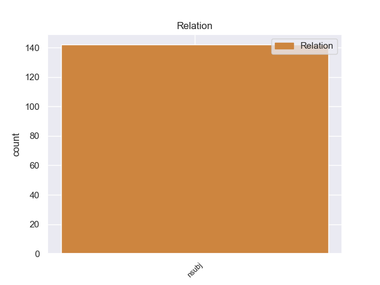
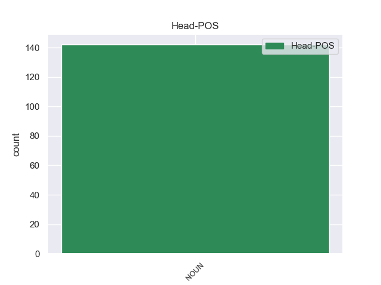
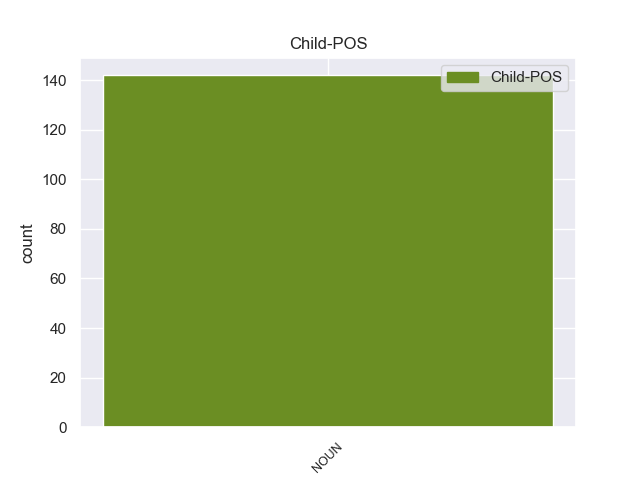

Distribution of features within this leaf



Agreement Rules sorted by frequency.
- When the dependent token is the nominal subject(nsubj) of the head token, and the head token is NOUN and the dependent token is NOUN.
1 172-я _ _ _ _ 0 _ _ _
2 стрелковая _ _ _ _ 0 _ _ _
3 дивизия дивизия NOUN NN Animacy=Inan|Case=Nom|Gender=Fem|Number=Sing 6 nsubj _ _
4 -- _ _ _ _ 0 _ _ _
5 воинское _ _ _ _ 0 _ _ _
6 соединение соединение NOUN NN Animacy=Inan|Case=Nom|Gender=Neut|Number=Sing 0 _ _ _
7 СССР _ _ _ _ 0 _ _ _
8 в _ _ _ _ 0 _ _ _
9 годы _ _ _ _ 0 _ _ _
10 советско-финской _ _ _ _ 0 _ _ _
11 и _ _ _ _ 0 _ _ _
12 Великой _ _ _ _ 0 _ _ _
13 Отечественной _ _ _ _ 0 _ _ _
14 войн _ _ _ _ 0 _ _ _
15 . _ _ _ _ 0 _ _ _
Disagree Examples:
1 Интеркаля́рная _ _ _ _ 0 _ _ _
2 меристе́ма меристема NOUN NN Animacy=Inan|Case=Nom|Gender=Fem|Number=Sing 7 nsubj _ _
3 -- _ _ _ _ 0 _ _ _
4 активно _ _ _ _ 0 _ _ _
5 растущие _ _ _ _ 0 _ _ _
6 меристематические _ _ _ _ 0 _ _ _
7 участки участок NOUN NN Animacy=Inan|Case=Nom|Gender=Masc|Number=Plur 0 _ _ _
8 , _ _ _ _ 0 _ _ _
9 расположенные _ _ _ _ 0 _ _ _
10 большей _ _ _ _ 0 _ _ _
11 частью _ _ _ _ 0 _ _ _
12 у _ _ _ _ 0 _ _ _
13 основания _ _ _ _ 0 _ _ _
14 стеблевых _ _ _ _ 0 _ _ _
15 междоузлий _ _ _ _ 0 _ _ _
16 между _ _ _ _ 0 _ _ _
17 зонами _ _ _ _ 0 _ _ _
18 дифференцированных _ _ _ _ 0 _ _ _
19 тканей _ _ _ _ 0 _ _ _
20 . _ _ _ _ 0 _ _ _
1 Расстояние расстояние NOUN NN Animacy=Inan|Case=Nom|Gender=Neut|Number=Sing 10 nsubj _ _
2 до _ _ _ _ 0 _ _ _
3 районного _ _ _ _ 0 _ _ _
4 центра _ _ _ _ 0 _ _ _
5 Вологды _ _ _ _ 0 _ _ _
6 по _ _ _ _ 0 _ _ _
7 автодороге _ _ _ _ 0 _ _ _
8 -- _ _ _ _ 0 _ _ _
9 76 _ _ _ _ 0 _ _ _
10 км км NOUN NN Animacy=Inan|Case=Gen|Gender=Masc|Number=Plur 0 _ _ _
11 , _ _ _ _ 0 _ _ _
12 до _ _ _ _ 0 _ _ _
13 центра _ _ _ _ 0 _ _ _
14 муниципального _ _ _ _ 0 _ _ _
15 образования _ _ _ _ 0 _ _ _
16 Новленского _ _ _ _ 0 _ _ _
17 по _ _ _ _ 0 _ _ _
18 прямой _ _ _ _ 0 _ _ _
19 -- _ _ _ _ 0 _ _ _
20 16 _ _ _ _ 0 _ _ _
21 км _ _ _ _ 0 _ _ _
22 . _ _ _ _ 0 _ _ _
1 Языки язык NOUN NN Animacy=Inan|Case=Nom|Gender=Masc|Number=Plur 5 nsubj _ _
2 местного _ _ _ _ 0 _ _ _
3 населения _ _ _ _ 0 _ _ _
4 -- _ _ _ _ 0 _ _ _
5 себуано себуано NOUN NN Animacy=Inan|Case=Nom|Gender=Neut|Number=Sing 0 _ _ _
6 , _ _ _ _ 0 _ _ _
7 хилигайнон _ _ _ _ 0 _ _ _
8 , _ _ _ _ 0 _ _ _
9 бинукид _ _ _ _ 0 _ _ _
10 ( _ _ _ _ 0 _ _ _
11 язык _ _ _ _ 0 _ _ _
12 народности _ _ _ _ 0 _ _ _
13 букиднон _ _ _ _ 0 _ _ _
14 ) _ _ _ _ 0 _ _ _
15 . _ _ _ _ 0 _ _ _
1 Причины причина NOUN NN Animacy=Inan|Case=Nom|Gender=Fem|Number=Plur 4 nsubj _ _
2 этого _ _ _ _ 0 _ _ _
3 , _ _ _ _ 0 _ _ _
4 разрушение разрушение NOUN NN Animacy=Inan|Case=Nom|Gender=Neut|Number=Sing 0 _ _ _
5 гнездовых _ _ _ _ 0 _ _ _
6 и _ _ _ _ 0 _ _ _
7 кормовых _ _ _ _ 0 _ _ _
8 ареалов _ _ _ _ 0 _ _ _
9 путём _ _ _ _ 0 _ _ _
10 осушения _ _ _ _ 0 _ _ _
11 влажных _ _ _ _ 0 _ _ _
12 областей _ _ _ _ 0 _ _ _
13 , _ _ _ _ 0 _ _ _
14 использования _ _ _ _ 0 _ _ _
15 пестицидов _ _ _ _ 0 _ _ _
16 , _ _ _ _ 0 _ _ _
17 а _ _ _ _ 0 _ _ _
18 также _ _ _ _ 0 _ _ _
19 охота _ _ _ _ 0 _ _ _
20 и _ _ _ _ 0 _ _ _
21 собирание _ _ _ _ 0 _ _ _
22 яиц _ _ _ _ 0 _ _ _
23 . _ _ _ _ 0 _ _ _
1 Основной _ _ _ _ 0 _ _ _
2 признак признак NOUN NN Animacy=Inan|Case=Nom|Gender=Masc|Number=Sing 10 nsubj _ _
3 готического _ _ _ _ 0 _ _ _
4 свода _ _ _ _ 0 _ _ _
5 -- _ _ _ _ 0 _ _ _
6 четко _ _ _ _ 0 _ _ _
7 выраженные _ _ _ _ 0 _ _ _
8 профилированные _ _ _ _ 0 _ _ _
9 диагональные _ _ _ _ 0 _ _ _
10 ребра ребро NOUN NN Animacy=Inan|Case=Nom|Gender=Neut|Number=Plur 0 _ _ _
11 , _ _ _ _ 0 _ _ _
12 составляющие _ _ _ _ 0 _ _ _
13 основной _ _ _ _ 0 _ _ _
14 рабочий _ _ _ _ 0 _ _ _
15 каркас _ _ _ _ 0 _ _ _
16 , _ _ _ _ 0 _ _ _
17 воспринимающий _ _ _ _ 0 _ _ _
18 основные _ _ _ _ 0 _ _ _
19 нагрузки _ _ _ _ 0 _ _ _
20 . _ _ _ _ 0 _ _ _